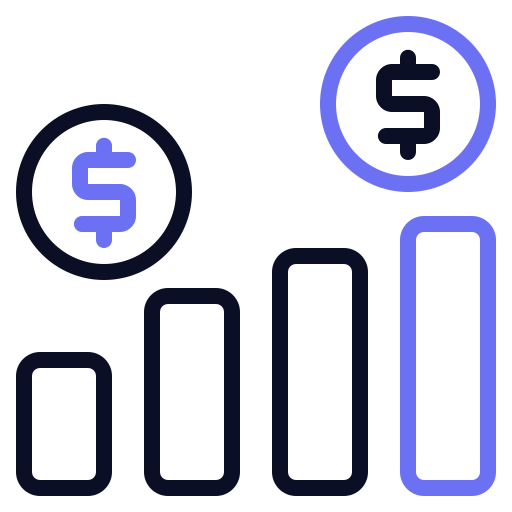

Skills
Statistical Analysis:
- Hypothesis Testing, Comparative Analysis, Psychometric Testing, Regressional Analysis, etc.
- Lean Six Sigma, Quality Improvement Methodologies
- Business Analytics (SWOT, Competative, & Systems Analysis), Personal Finance, etc.
- Quantitative & Qualitative Methodologies, Regulatory Compliance, Logistics & Coordination
- Adobe (Indesign, Illustrator), MS (Publisher, SharePoint, PowerPoint), Canva, and Affinity Suite
Communication is my Superpower
Programs
Statistical Analysis
- SAS
- R & R Studio
- SPSS
- JMP
- MATLAB
- MS Excel
Data Collection & Management
- REDCapTM
- QualtricsXM
- Oracle/MySQL
- MS Access
- FileMaker Pro
Data Visualization & Reporting
- MS Excel
- LucidCharts
- VISIO
- Prezi
- MS Powerpoint
Workflow Optimization
- Adobe Workfront
- Notion
- REDCapTM
- Slack
Programming & Repository
- Python
- C++
- Git & GitHub
- Visual Studio Code

Financial Analysis & Reporting
- Peoplesoft
- Kronos Workforce Ready
- Cerner Clairvia
- Procurement Gateway Systems
Work Experience
2017 - NOW | STATISTICIAN & DATA SCIENTIST: Hackensack Meridian Health
- Implemented statistical modeling and analysis using SAS, R, and MS Excel to evaluate the impact of clinical interventions and inform best clinical practice for 50+ clinical studies/projects.
- Built & monitored 250+ data repositories in REDCap and implemented logic programming to automate data validation and querying.
- Reported and presented statistical analytics, data visualizations and executive reports on healthcare outcomes to clients, executive leadership, peer review journals, and regional/national conferences.
- Spearheaded quality assurance audits and data querying for 20+ projects/studies and proposed departmental data quality policies in alignment with privacy/confidentiality standards and best practices for data governance.
- Leveraged Lean Six Sigma to reduce cycle time by 348% and increase departmental achievement by 200%.
- Accelerated departmental processes (140%) by auditing and redesigning departmental workflows utilizing VISIO, Workfront, and quality improvement analytical methods
- Reconciled department revenue ($200,000+), budget, and expenditure for 3 cost centers, verified accounting disbursements for accuracy, and provided quarterly reports to directors and executives
2015-2017 | PROGRAM COORDINATOR: Cornell University
- Analyzed program key performance indicators (KPI) in quarterly/annual reports to executive leadership which informed decision-making for resource allocation and strategic planning
- Created systems to monitor finances, reduced expenditure by 50%, and executed 20+ annual educational/professional development workshops and 4+ conferences.
- Recruited, onboarded, mentored, and supervised 15+ employees: implemented outcome-driven management and conducted director-level tasks including conflict prevention/resolution in a functional reporting structure
- Planned & executed educational, network, and professional development programming for the underserved
2013-2015 | PROGRAM ASSISTANT: Cornell University
- Collected, managed and reported programmatic statistics and program expenditures to executive leadership for annual program assessment and resource allocation.
- Evaluated client feedback/satisfaction survey analytics, SWOT analysis, and KPIs for executive reporting, budget justifications, and program longevity/effectiveness determinations
- Redesigned print media, digital marketing imagery, and website development with scheduling functionality utilizing MS SharePoint to promote educational support and counseling.
Education
- M.P.S Applied Statistics | Cornell University
- B.S. Business Administration: Financial Analysis | University at Buffalo
- B.A. Economics | University at Buffalo
Projects & Research Studies
Sub-Investigator & Statistician:
- RETAIN Study: Online Discharge Educational Video for Hospitalized Robotic-Assisted Laparoscopic Radical Prostatectomy Patients
- CRITERION Study: Development and Assessment of the Psychometric Properties of the HOFRA Tool for Predicting and Preventing Inpatient Maternal Falls
- WATCH Study: “What Made you Tell?” Factors Impacting Child Sexual Abuse Disclosure
- COACH Study: Congestive Heart Failure and Cardiac Rehabilitation Study
Statistician & Project Lead
- HackensackUMC's 6th & 7th ANCC MAGNET Designations (Nurse Sensitive Indicators)
- Applying Lean Six Sigma to Evidence Based Practice Project (Published)
- High Velocity Decision-Making Study
Process Improvement Manager:
- Advanced Practice Nurse Peer Review Process
- Registered Nurse Peer Review Process
- Registered Nurse New Council Memebership Application Process
- Monoclonal Antibody (mAB) Program
Publications
- McCoy, C. & Douglas, C.(2022). Applying Lean Six Sigma to Evidence-Based Practice Projects. Nursing Management, 53(5), 35-39. 10.1097/01.NUMA.0000829276.81512.69
Professional Organizational Membership
- American Statistical Association
Copyright ©2024 CM4Data. All rights reserved